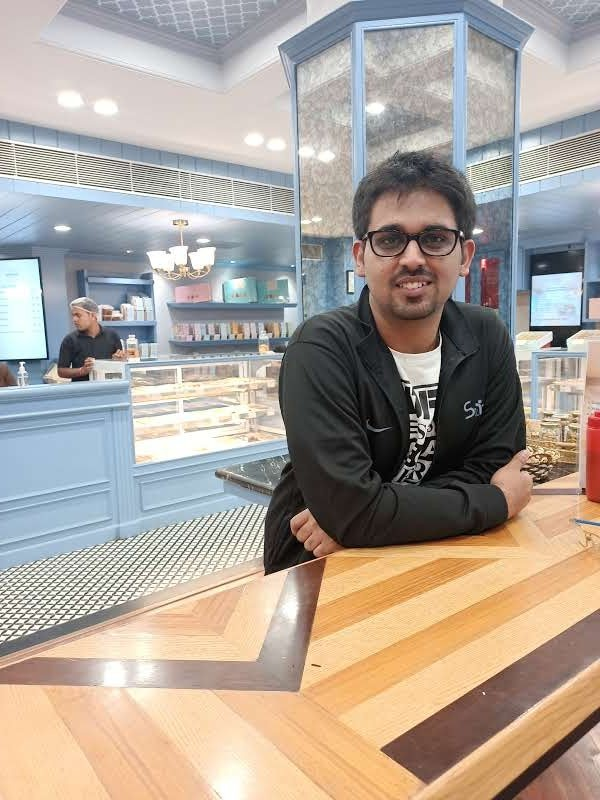

Hi! I am Ayushraj from the electrical department and in this ridiculously long blog, you will find:

All the world's a stage!
The good ol' internship season is back in its full swing and a flurry of emotions like confusion, anxiety, insecurity, and anticipation must be dwelling inside even the bravest of hearts. Is my resume good enough? Would I make it to a day-1 company? Will I be able to clear the CPI cutoffs? How should I prep for my dream company? Questions like these must be echoing incessantly in most of your heads and being encumbered with the burden of maintaining your acads, juggling third-year PORs, and balancing several other commitments, you'll soon realize that the internship season is nothing but an unrelenting adrenaline rush!
Well before we delve into my intern story, I must highlight one thing above all others: no two players in this elaborate act have the same script and everyone has a different expectation with oneself and a unique modus operandi. Contrasting your experience with your peers who succeeded early and then feeling melancholic will only invite unnecessary contempt and will be detrimental to your own cause. It doesn't matter "when" you exit the play, what matters is how much you cherish, learn, and grow on the stage!
A peep into the past
I rarely recall a time when I have been busier than the last week of July the previous year. My summer project was approaching its completion, my POR responsibilities were at their peak, plus resume deadlines and course registration (back when asc still used to work :P): all were culminating in a treacherously short interval of time. Furthermore, I had still not made up my mind which field interested me the most, but nonetheless things were still looking great and optimistic with basically every item ticked in the intern checklist. I was involved in multiple projects, my CPI was good, I had a POR whose work I treasured, and based on my past record I could have ventured into both core and non-core profiles. Then what could have possibly gone wrong when everything seemed so perfect? Well as it turns out, a lot of things! Little did I know that I had signed up for a roller coaster ride!
Double Trouble
The first couple of weeks whooshed by while attending PPTs, filling SOPs/applications, and practicing coding and aptitude tests. Charmed with all the commotion and hype surrounding the day-1 companies and their lucrative offers, it almost came as nothing less than a rude shock that I was forbidden to even apply for a large majority of them! Nope, my CPI was not abysmally low, nor did I piss off the ICs or the companies in any manner. It happens that I was blissfully unaware that being a dual-degree student, I was rather not allowed to sit for these companies due to their PPO policies or some other poppycock.
Apparently persistently bugging the company officials and the placement managers served little purpose, and I gradually missed out on many companies that I would have loved to apply to. Not being able to participate while your peers are getting busy was a harrowing experience, but that was not the end of it!
Out of the few day-one companies that had shortlisted me, gradually I was rejected by all of them one by one. The day-one period whizzed past me as swiftly as it had arrived, and the FOMO of not getting a top-shot intern started consuming me. The "Craxx Machaxx" posts on Facebook timelines (:P) did no less to further aggravate my woes.
Not willing to lose heart, I still resolved to do better thereafter and interviewed for several coveted companies like McKinsey, Adobe, Morgan Stanley, AmEx, and many others, yet the result was all the same. Something was seriously amiss and it was certainly not my resume or test performances (since I was getting shortlisted everywhere and pretty much nailing all the coding & aptitude tests). Gradually, after consulting with seniors and introspecting, I started to polish my interview skills and zeroed in on the mistakes I committed in previous interviews.
Enter Walmart
By the time Walmart arrived, I had already started applying externally through LinkedIn as a backup, and it was not wrong to say that all the rejections had started to take a big toll on me. In fact, I signed up for the JAF practically at the last hour and only because the work profile was highly diverse and looked somewhat interesting.
The selection procedure was straight forward, there was a technical round and later interviews were scheduled. The technical round was divided into two sections, the first having a couple of typical coding questions and the second one containing MCQs from various concepts in CS like cryptography, SQL, machine learning, and HTML. I don't quite remember the duration of the test, but I do remember that I arrived 10 mins late for no particular reason at all. That much how half-hearted my endeavor was!
The interview shortlist was announced a little while later and I was a bit surprised that the company had jumped the technical interview and was conducting the HR round straight away. The HR round went pleasantly as well, with questions centering majorly around the growth and prospects of the company in India, the space it is trying to capture here, the work and the teams involved, and a general discussion over my past projects.
Habituated to not expecting anything after interviews, I was indeed taken aback after seeing my name in the final selection list. Guess nonchalance is the first step to success!
The COVID Conundrum
"Man plans, and God laughs."
The way this whole Covid situation has unraveled, God's ribs and facial muscles must be aching from all the hysterical laughter he has been getting for the past five months. In the wake of innumerable ruined plans for Bengaluru peppered by all the pandemonium of vacation-preponing and semester rescheduling, Walmart adapted brilliantly and was in fact one of the foremost companies to facilitate virtual onboarding.
The intern duly commenced in the second week of April and after all the orientation formalities, virtual desktops (VDIs) were configured on our lappies, and we were put in touch with the project managers. There was a little bump in the road though as we were not allowed to choose our projects ourselves (as intended previously) due to such short notice and potential hassles in an online internship.
Personally speaking, I was a part of the Global Data Platforms team and was soon communicated the objectives and details of my project, which was to integrate a knowledge-sharing platform in the company's existing MLP. Having no past experience with SSH backend I had to figure out a lot of stuff to get started. The documentation of the knowledge-sharing platform was itself scarce and was fairly new to have considerable open-source support.
Ironing out the details and all the nitty-gritty about integration and operation of the platform, I again had to gain proficiency in tools like Docker and Kubernetes for large scale deployments. The next part was to then enhance and figure out several utilities like Git integration and implementing authentication frameworks on the MLP.
A side objective was also to accomplish a comprehensive (comprehensive being an understatement) market study of similar open-source knowledge platforms, fathoming a way to integrate their basic components on the MLP and assessing them. Eventually, a final presentation, which summarized my findings and progress, was conducted by me in front of the managers and other members of the team.
The project was certainly in the domain that I had not anticipated or desired for, however, the experience in itself was still an enriching one, mainly because of the support I received from the mentor assigned to me. The communication, if sporadic, was largely because of my intermittent pace (I do like to lax sometimes :P even writing this helpful[?] blog took me a couple of days). But even at very odd hours (way past midnight), I was assured to get a reply almost instantaneously on Slack, and on-call if urgent. There was no detailed timeline as such, and sufficient time was provided to catch up with concepts and complete tasks at one's own comfort rate.
The slow speed of VDI was a pain in the arse though, but again God craved for his share of amusement!
But what if you hadn't gotten into Walmart??
I will quote Maya Angelou here, "Hoping for the best, prepared for the worst, and unsurprised by anything in between."
The internship season was nowhere close to ideal for me and I flunked some big opportunities for myself, not once but multiple times, so much so that I had actively begun contacting seniors, alumni, and literally anyone who could provide any sort of guidance for company apping. I was indeed preparing for the worst, and here are some of the pointers, based on my observations and understanding that might suit you too:
Last few morsels of Gyan
Enduring the thick of the intern season with things working out in just the opposite way they were meant to, I am more than qualified to comment on things that you should not do during this whole internship process, especially interviews:
There are also some prevalent myths that I would like to bust:
Credits
This blog has also been uploaded by Insight, IIT Bombay. Special thanks to insight-iitb-summerblogs.